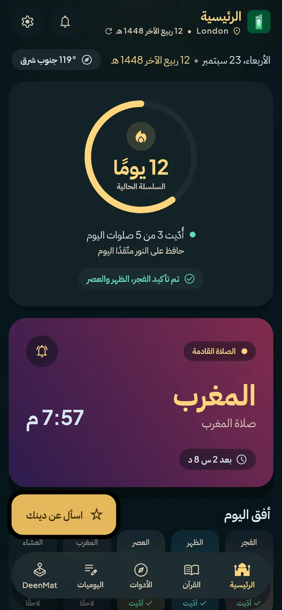
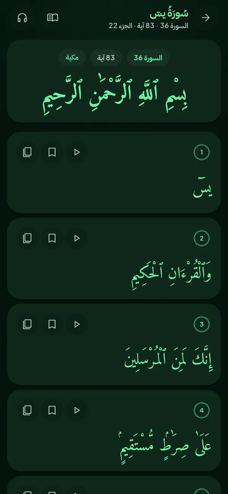
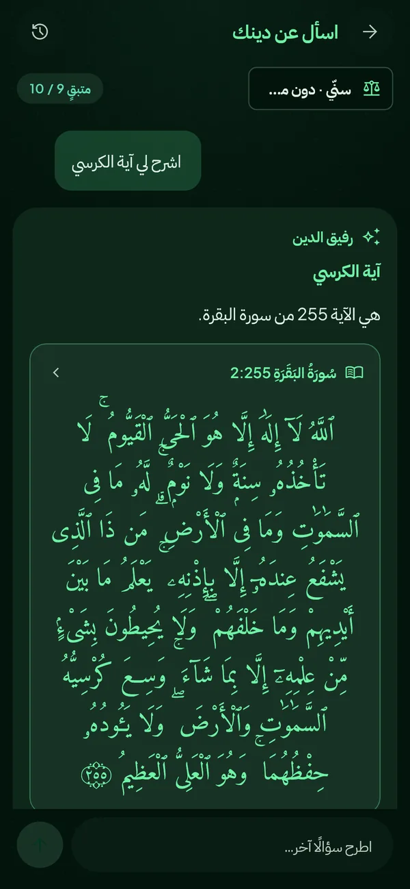
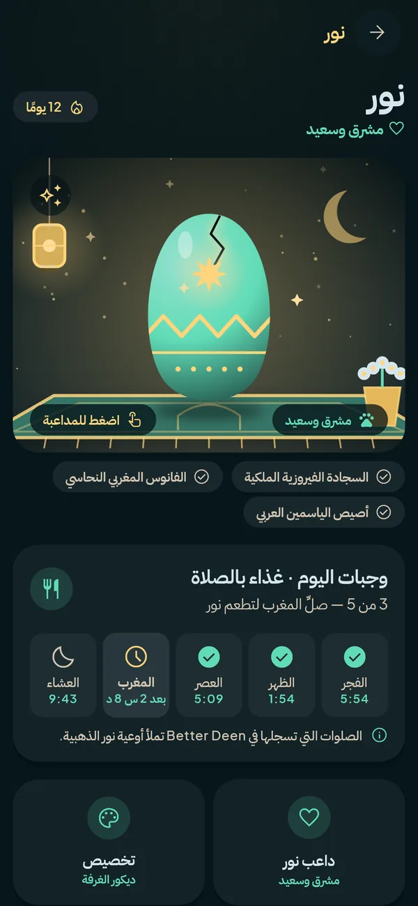
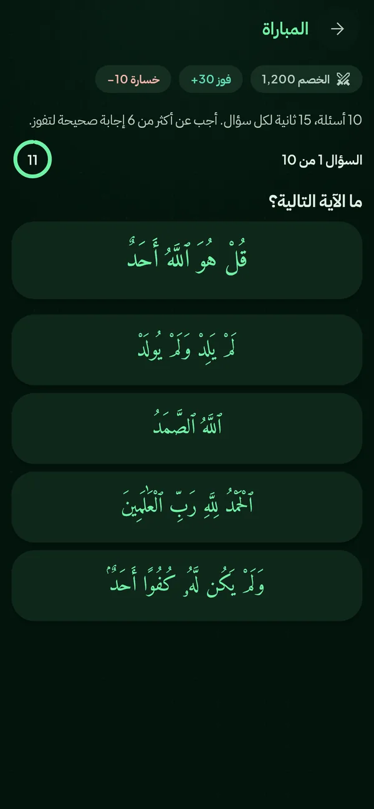
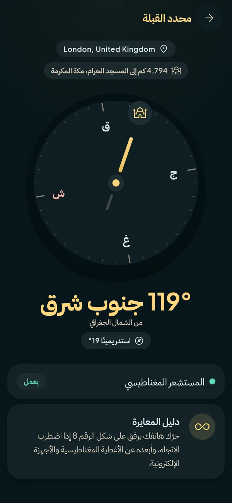

صلِّ في وقتها، دائمًا
مواقيت تُحسب على هاتفك بالطريقة والمذهب اللذين تختارهما، سنيًا كان أو شيعيًا. أذان كامل بالصوت الذي تفضّله، وتنبيهات قبل كل صلاة، وسلاسل متتالية، وأدوات على الشاشة الرئيسية.
لأجهزة iPhone وAndroid
مواقيت الصلاة والأذان، والقرآن كاملًا، ومساعد للمعرفة الإسلامية، ورفيق ينمو مع كل صلاة. هادئ وخاص وبلا إعلانات.
أندرويد الآن · Google Play قريبًا
آيفون: قريبًا على App Store


اختر لغتك وطريقة الحساب ومذهبك. لا نفترض لك شيئًا أبدًا.
الأذان والتنبيهات والأدوات المصغّرة في وقتها. سجّل كل صلاة وشاهد نور ينمو.
اقرأ القرآن واستمع إليه، واسأل Deen، وتعلّم الصلاة، واستخدم كل الأدوات.

اسأل عن دينك وحياتك اليومية كمسلم، وستحصل أولًا على إجابة واضحة ثم على التفاصيل. يتبع المذهب الذي تختاره، ويذكر القرآن والأحاديث التي يعتمد عليها، ويقول متى لا يكون متأكدًا.
مواقيت تُحسب على هاتفك بالطريقة والمذهب اللذين تختارهما، سنيًا كان أو شيعيًا. أذان كامل بالصوت الذي تفضّله، وتنبيهات قبل كل صلاة، وسلاسل متتالية، وأدوات على الشاشة الرئيسية.
الرسم العثماني مع الترجمة والنطق بالحروف اللاتينية، ومصحف صفحة بصفحة، وتلاوات مئات القرّاء، مع التنزيل للاستماع دون اتصال ومشغّل يواصل في الخلفية.

رفيقك يتغذّى بالصلوات التي تسجّلها، ويرتقي مع سلسلتك ويفتح كنوزًا. سبب لطيف للعودة خمس مرات في اليوم.

من أي سورة هذه الآية؟ ما الآية التالية؟ عشرة أسئلة موقوتة من النص الحرفي، وترتيب عالمي ومواسم. وبعد كل مباراة تُفتح كل آية في القارئ.

بوصلة القبلة، والمسبحة، واليوميات، والتقويم الهجري والصيام، وتعلّم الصلاة خطوة بخطوة، ومواقيت الصلاة في الطائرة، وتركيز الصلاة لتترك الهاتف حين يحين الوقت.
المس ؟ في أي أداة داخل التطبيق لتعرف كيف تعمل.
كلمات حقيقية من مستخدمين حقيقيين.
لا توجد مراجعات بعد. قد تكون مراجعتك الأولى.
أخبر الآخرين كيف يساعدك Better Deen. نقرأ كل مراجعة وننشر ما يمكن مشاركته منها.
وصلتنا مراجعتك. سنقرؤها قبل أن تظهر على الموقع.
ابدأ بتجربة مجانية لمدة 7 أيام. إذا ألغيت من حسابك في المتجر قبل انتهائها فلن تدفع شيئًا.
الأسعار بالدولار الأمريكي، ويعرض المتجر السعر بعملتك.
لا ينبغي أن يُحرم منه مسلم بسبب المال. إن كنت حقًا لا تستطيع الدفع، فعاهد الله على ذلك في التطبيق واستخدمه كاملًا مجانًا لمدة سنة، ولا يُطلب منك شيء آخر.
التي تختارها: رابطة العالم الإسلامي، أم القرى، ISNA، الهيئة المصرية، كراتشي، الجعفرية، طهران وغيرها، مع مذهب العصر وتعديل يدوي لكل صلاة.
تحصل على تجربة مجانية لمدة 7 أيام، ثم 2.99 دولار شهريًا أو 29.99 دولارًا سنويًا. وإن كنت لا تستطيع الدفع حقًا، يمكنك أن تقسم بالله في التطبيق وتستخدم كل شيء مجانًا لمدة سنة.
لا. يقدّم معرفة عامة مع مصادرها لتتعلّم وتتحقّق. وفي المسائل الشخصية والحساسة اسأل عالمًا مؤهلًا.
نعم. المواقيت والقبلة والأذان ونص القرآن والمسبحة ومذكرتك لا تحتاج إلى اتصال. أما Ask Deen والاستماع إلى التلاوات والساحة فتحتاج إليه.
الإنجليزية والإسبانية والعربية والهولندية، والعربية بواجهة كاملة من اليمين إلى اليسار.
نعم في مواقيت الصلاة (بما فيها الطريقة الجعفرية وطريقة طهران) وفي المذهب الذي يتبعه Ask Deen. أما مكتبة الأحاديث ففيها حاليًا مجموعات سنّية فقط.
تُرسَل إلى مزوّد ذكاء اصطناعي للإجابة عنها دون اسمك أو بيانات حسابك، وتُحفظ في سجلك على هاتفك أنت. التفاصيل في سياسة الخصوصية.
الاشتراك هو ما يموّل التطبيق، فلا يحتاج أبدًا إلى بيع انتباهك أو بياناتك.
من حسابك في Google Play أو App Store، في قسم الاشتراكات. وفي التطبيق اختصار في الإعدادات ← الاشتراك.
سيصل قريبًا إلى Google Play وApp Store. وحتى ذلك الحين يمكن لمستخدمي Android تثبيته من صفحة التنزيل.
حمّل Better Deen ولتكن صلاتك القادمة في وقتها.
التنزيل لأجهزة Androidآيفون: قريبًا على App Store